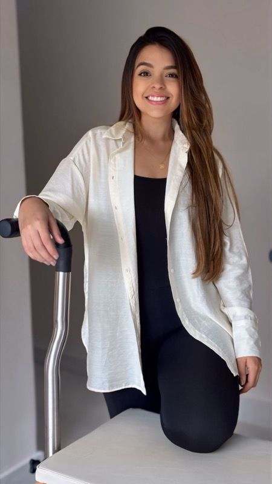
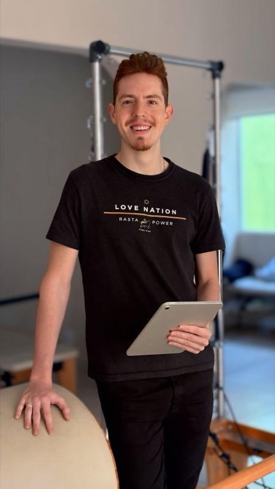
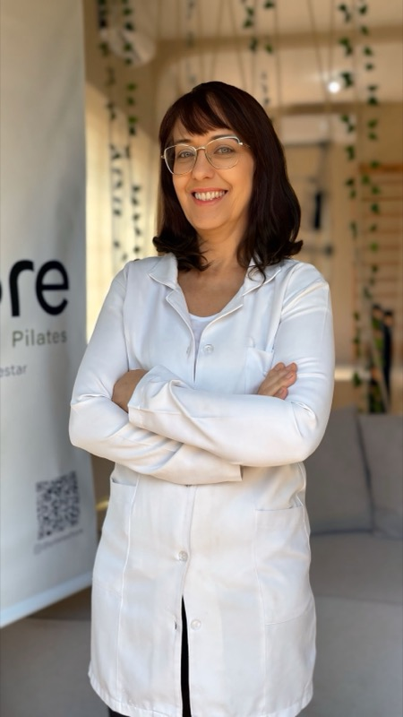
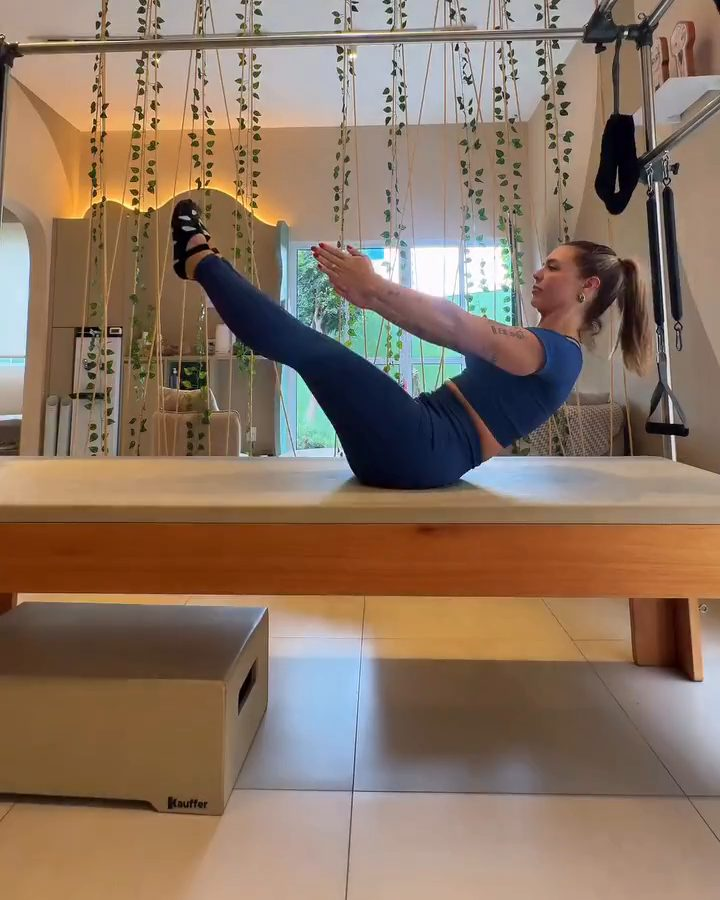
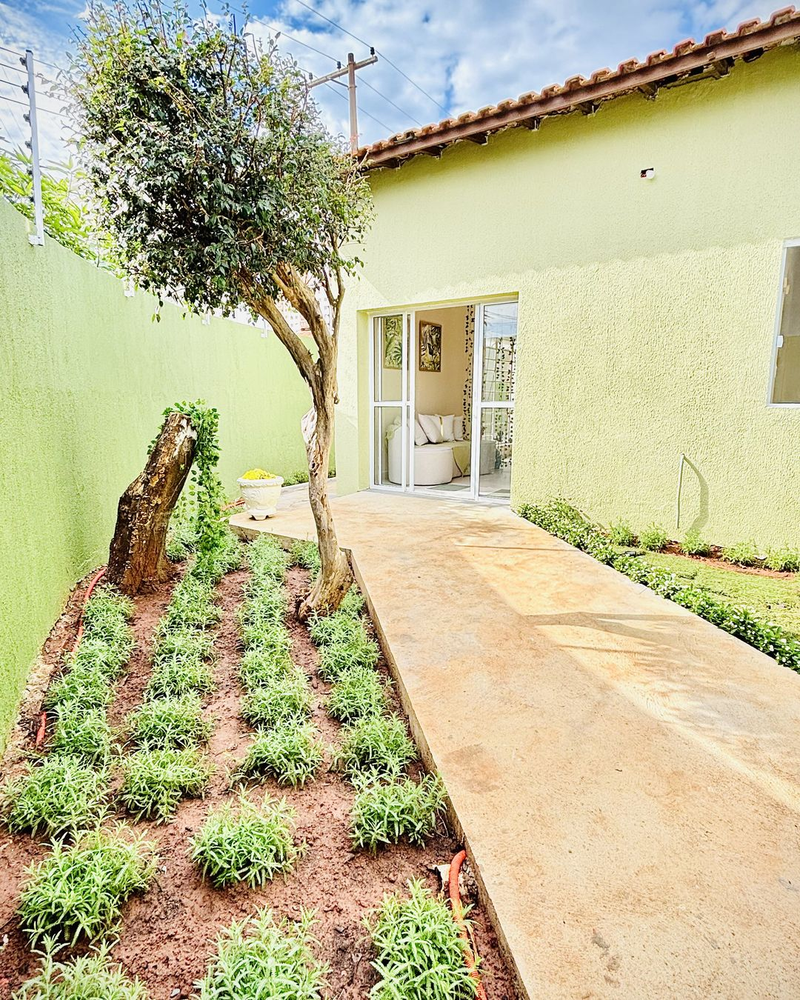
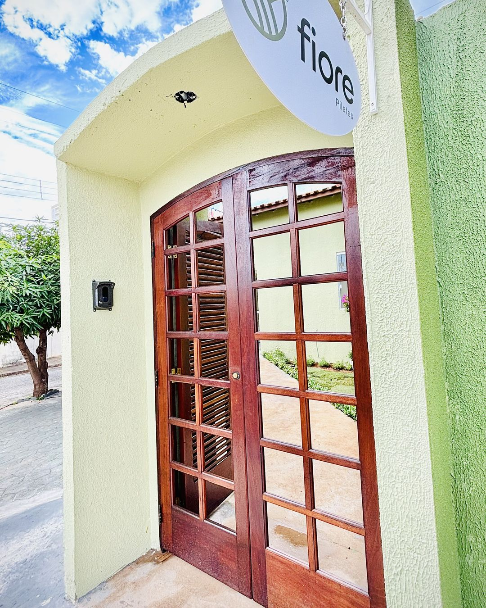
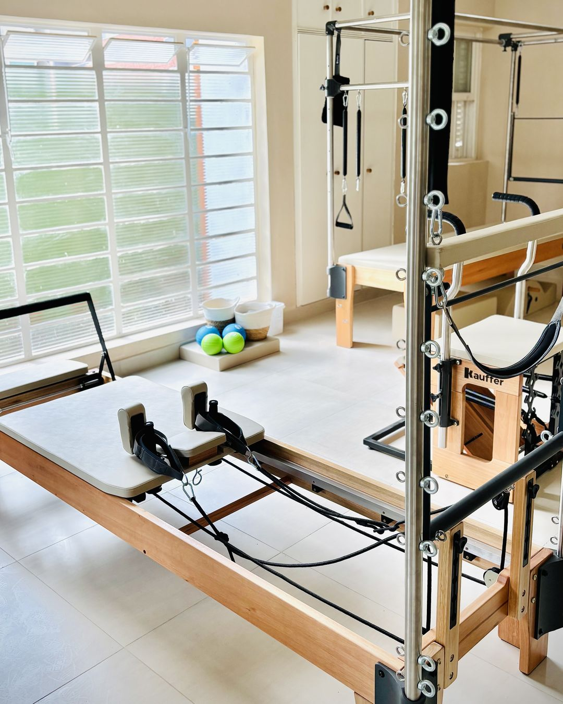
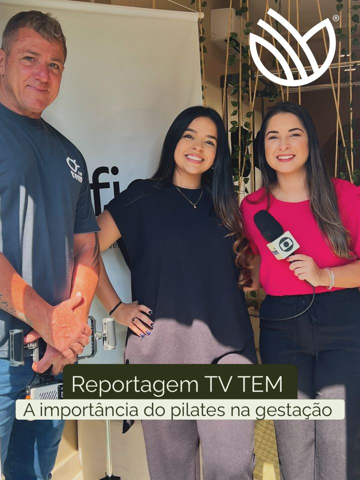
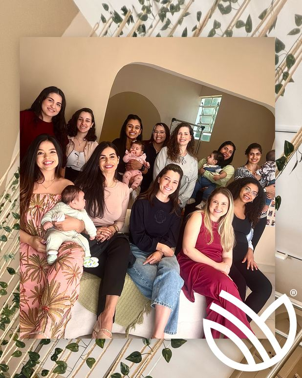
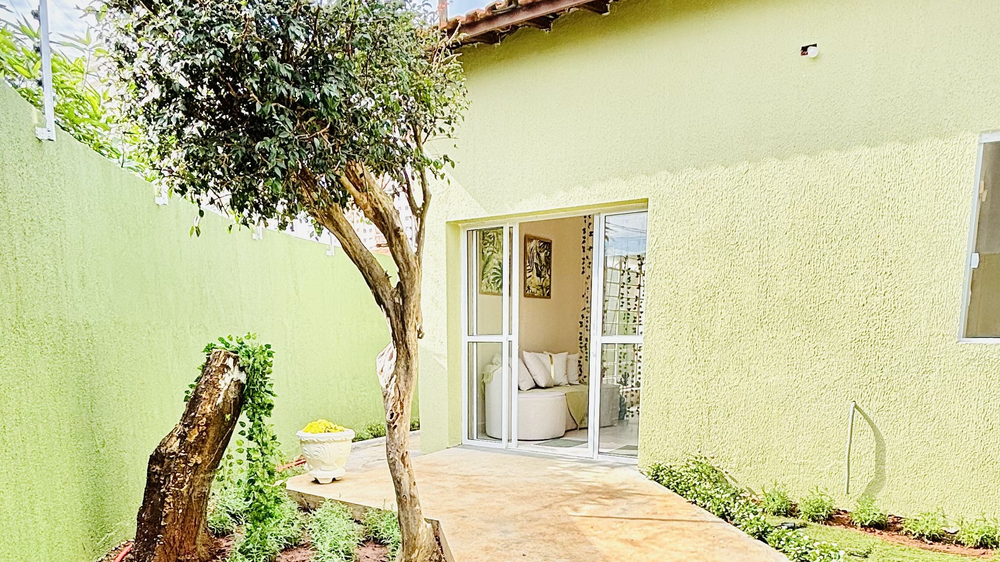

Pilates para gestantes e saúde da mulher em Bauru Floresça com leveza.
Aulas individuais com fisioterapeutas, da gestação ao pós-parto e em todas as fases da mulher.
- Gestação
- Pós-parto
- Saúde da mulher
- Fisioterapia pélvica
- Reabilitação
- Bem-estar
Cuidamos e fortalecemos mulheres em todas as fases da vida, com um cuidado especial para gestantes. Um espaço acolhedor e seguro, onde cada pessoa se sente verdadeiramente bem cuidada.

Benefícios que você sente no corpo e na rotina
Alívio de dores
Pode contribuir para aliviar dores lombares, pélvicas e tensões do dia a dia.
Postura e mobilidade
Consciência corporal, equilíbrio e liberdade de movimento.
Força e equilíbrio
Fortalecimento profundo e seguro, com técnica e progressão.
Bem-estar e leveza
Respiração, relaxamento e conexão entre corpo e mente.
Mais energia no dia
Disposição que acompanha você muito além das aulas.
Recuperação segura
Reabilitação e pós-parto no seu tempo de retorno.
Um Pilates que acolhe você e o seu bebê
Cada aula é pensada para a sua fase, com fisioterapeutas especializadas em pré-natal e pós-parto. Com acompanhamento adequado, o Pilates pode ajudar no alívio de desconfortos, na consciência corporal e na preparação para o parto.
- 1º trimestre
Adaptação e escuta
Respiração, consciência corporal e ajustes leves, respeitando enjoos e cansaço.
- 2º trimestre
Força e postura
Força e mobilidade, adaptando os exercícios ao crescimento da barriga.
- 3º trimestre
Preparo para o parto
Intensidade ajustada, com foco em conforto e alívio na reta final.
- Pós-parto
Recuperação no seu tempo
Core e assoalho pélvico, com um retorno cuidadoso ao movimento.
Inicie sempre com a liberação do seu médico.
Avaliação inicial da gestante: R$ 150, presencial e completa, com anamnese e testes. Você recebe a análise em PDF e o valor é abatido no plano.
Um cuidado para cada fase, com a mesma excelência
Nosso diferencial são as gestantes, mas a Fiore acolhe mulheres, idosos e quem busca mais saúde e qualidade de vida.
Um cuidado 360° para a sua jornada
Pilates, fisioterapia pélvica e terapias manuais juntos por você, num só plano montado na avaliação inicial.

Fiore é flor, em italiano. Nasceu de um sonho cheio de cuidado.
Um sonho da fisioterapeuta Raquel Cardoso: criar um espaço onde cada pessoa se sentisse verdadeiramente bem cuidada. O nome foi inspirado na avó de Raquel, que cultivava um jardim cheio de vida e beleza. Lembranças que até hoje inspiram cada detalhe do nosso espaço.
Mais do que um estúdio, um ecossistema de cuidado: pessoas, técnica e acolhimento juntos pela maternidade e pela saúde da mulher.
Raquel Cardoso · Fisioterapeuta · CREFITO-3/389610-F
Moção de reconhecimento do CREFITO-3 (2025)
A equipe

Raquel Cardoso
Fundadora · Fisioterapeuta
Andressa
Fisioterapeuta

Filipe
Fisioterapeuta

Rosana
Fiore Toque · Massoterapia

Um método estruturado, feito para você evoluir
Aplicamos o Pilates Contemporâneo: em vez de uma sequência fixa, adaptamos exercícios e progressão ao seu corpo e objetivo, com base em fisioterapia. Toda a equipe é formada em Fisioterapia, com formação específica em Pilates, e combina Reformer, Chair, Cadillac, Barrel e Solo conforme a sua necessidade.
Avaliação inicial individualizada
Seu histórico, objetivos e necessidades, num encontro acolhedor.
Plano de aula personalizado
Sob medida, respeitando o seu corpo e o seu momento.
Registro contínuo de evolução
Cada conquista acompanhada, para você sentir o seu progresso.
Reavaliações periódicas
Ajustamos o plano com você, sempre buscando os melhores resultados.
alunos atendidos ao longo da nossa história
são gestantes acompanhadas de perto
nota no Google, com 45 avaliações
aulas individualizadas, feitas para você
Um ambiente pensado para o seu bem-estar
Sereno e acolhedor. Cada detalhe foi preparado para você se sentir em casa.




Amado por quem valoriza o bem-estar
Trechos de avaliações públicas de alunas. Veja todas no nosso perfil do Google.
Como visto na TV TEMPerto de você e da nossa comunidade
Encontros, informação de qualidade e conteúdo para gestantes todos os dias nas nossas redes. O cuidado vai além do estúdio.

Pilates na gestação, na TV TEM

Encontro sobre diástase e pós-parto
Moção de reconhecimento do CREFITO-3

Um mimo para quem completa um ano com a gente
Cuidado humano, apoiado por tecnologia própria
Criamos o Mirae aqui dentro da Fiore: tecnologia própria pensada para o nosso jeito de cuidar, com foco nas alunas, do primeiro contato ao acompanhamento de cada evolução.
- Prontuário completo, com idade gestacional e data prevista do parto calculadas automaticamente
- Pressão arterial acompanhada a cada sessão, com aviso à equipe se algo sair do esperado
- Mi, nossa assistente de inteligência artificial, ajuda a tirar dúvidas e confirmar presença pelo WhatsApp
- Contrato e matrícula organizados automaticamente, sem planilha, do primeiro contato ao pós-parto
"A Mi proativa avisa quem está sumido antes de a gente perceber, e o prontuário com a agenda multi-aluno mudou completamente nossa rotina. Não consigo imaginar voltar para planilha."
Equipe Fiore Pilates
Tudo o que você precisa saber
Ficou alguma dúvida? Fale com a gente.
Pilates é seguro durante a gestação?
Com acompanhamento adequado e profissional especializado, o Pilates pode ser uma prática segura na gestação. Na Fiore, cada aula é individualizada e adaptada à sua fase, respeitando os limites do seu corpo. Inicie sempre com a liberação do seu médico.
Preciso ter experiência prévia para começar?
Não precisa. Muitas alunas começam sem nunca ter feito Pilates. Tudo parte da avaliação inicial, que monta um plano no seu ritmo.
Vocês têm aula experimental?
Não trabalhamos com aula experimental. A sua experiência começa na avaliação inicial, um encontro individual para te conhecer e desenhar o seu plano.
A partir de quando uma gestante pode iniciar o Pilates?
O momento ideal varia para cada mulher. O recomendado é iniciar com liberação do seu médico e com acompanhamento de profissionais especializados, como na Fiore.
Como funciona a avaliação inicial?
É um encontro individual em que entendemos seu histórico, objetivos e necessidades. A partir dele montamos um plano personalizado e acompanhamos sua evolução ao longo das aulas.
A Fiore atende só gestantes?
Não. Gestantes são o nosso cuidado mais especial, mas atendemos mulheres em todas as fases, no pós-parto, na saúde da mulher, e também idosos e reabilitação.
As aulas são individuais ou em grupo?
O cuidado é sempre individualizado. Cada aula segue o plano feito para você na avaliação inicial.
Onde fica o estúdio Fiore Pilates?
Estamos na R. Baltazar Rodrigues, 4-82, Jardim Planalto, Bauru/SP, em um espaço pensado para o seu conforto e bem-estar.

Aqui, você vai ser cuidada de verdade
Dê o primeiro passo. Agende sua avaliação inicial e venha sentir o cuidado da Fiore de perto.
Venha nos visitar em Bauru
Endereço
R. Baltazar Rodrigues, 4-82
Jardim Planalto, Bauru/SPWhatsApp
Horário
Seg a Sex: 6h às 20h
Sábado: 7h às 12hRedes sociais